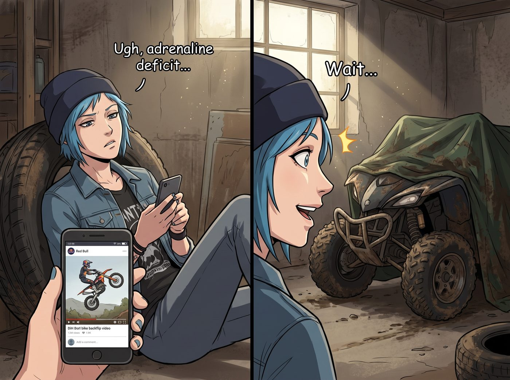
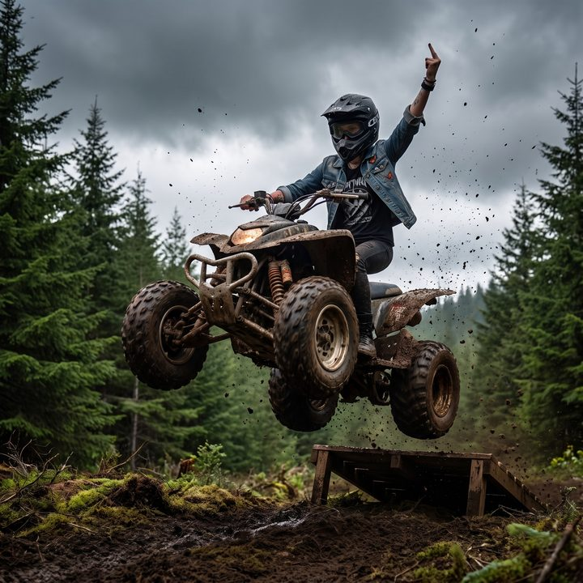

泥地車神


看著暗房裡洗出來的「光繪天使」照片，Chloe 雖然嘴上承認 Max 拍得很酷，但她那顆屬於街頭混混的心臟，依然處於嚴重的「腎上腺素赤字」狀態。
這天下午，Chloe 癱在工坊的舊輪胎上，百無聊賴地滑著 YouTube Shorts。屏幕上正在瘋狂推播那些喝了紅牛（Red Bull）的極限運動員，騎著越野機車在泥地裡後空翻的瘋狂影片。
引擎的轟鳴聲、飛濺的泥漿、以及衝上雲霄的失重感。
Chloe 的眼睛瞬間亮了。她的目光越過手機屏幕，精準地落在了工坊角落裡，一個蓋著防塵防水布的龐然大物上。
那是當初她們從 Apex 物流的營地逃命時，載著她和 Max 衝出森林的那台改裝四輪越野車。事件結束後，它就被蓋上防水布塞在角落吃灰。Chloe 斷斷續續地給它換過幾次零件，引擎其實早就能再次發出震耳欲聾的咆哮了。
「超級麥克斯！」Chloe 猛地站起來，一把掀開了防水布，露出那台沾滿油污、外表狂野的 ATV，「攝影展結束了！現在是阿卡迪亞灣『X Games（極限運動會）』的時間！」
【一小時後：營地邊緣的「作死跳台」】
伴隨著西雅圖連綿的陰雨，營地外圍的一塊空地已經變成了一個完美的天然泥沼。Chloe 揮舞著鐵鍬，用廢棄的木棧板和厚重的爛泥，硬生生地堆出了一個傾斜角高達 30 度的極限跳台。
「嗡——轟轟轟！！」
ATV 刺耳的引擎聲徹底打破了營地的寧靜。排氣管噴出藍白色的煙霧，Chloe 戴著露指手套，興奮地狂扭著油門，後輪在泥地裡瘋狂打滑，甩出大片的泥漿。
就在她準備掛上一檔，朝著那個作死跳台衝刺時，營地的兩大「緊箍咒」如期而至。
「熄火。馬上。」
Victoria 穿著一件名貴的防水風衣，手裡舉著一台配有三軸穩定器的 4K 運動攝影機，滿臉嫌棄地站在安全的柏油路邊緣。
而在她身旁，Lily 依然是那件一塵不染的米色針織衫，手裡拿著一個測速儀和一個寫字板，冷酷得像個車禍現場的鑑定專家。
「又來了……」Chloe 無奈地鬆開油門，翻了個白眼，「兩位老闆，我只是想在泥地裡飛一下，這是我身為一個藍領的合法娛樂權益！」
「我不在乎妳飛去哪裡，Chloe 學姐。我在乎的是理賠條款。」
Lily 推了推圓框眼鏡，走上前，遞給 Chloe 一份文件和一個極度厚重、甚至帶著頸椎保護支架的 DOT 認證全罩式安全帽： 「根據剛才的物理測算，這個跳台的起飛角度與您的預期初速度，有 64% 的機率導致您在空中翻車。如果您因為非必要的高危險行為導致骨折，我們的醫療預算將被徹底擊穿。
所以，我只有三個條件：第一，戴上這個安全帽；第二，簽一份營地內部的風險確認書，證明您知道自己在做什麼；第三，起跳之前，讓我檢查一次您的避震器和剎車。」
Chloe 震驚地看著那份文件：「妳的意思是……妳不阻止我？」
「行政的最高境界不是禁止，而是把風險降到可以接受的範圍。」Lily 乖巧地微笑著，強行把那個笨重的安全帽扣在了 Chloe 的頭上。
「至於我，」Victoria 舉起了手裡的 4K 攝影機，眼神中閃爍著老錢資本家看到流量密碼時的狂熱，「既然妳非要像個紅牛贊助的弱智一樣在泥裡打滾，那我就不能讓這份愚蠢白白浪費！我剛才註冊了一個名為『阿卡迪亞灣廢土車庫（Arcadia Bay Wasteland Garage）』的 YouTube 頻道。
聽著，藍毛猴子！飛得高一點！動作誇張一點！如果能帶點火花就更好了！只要這個 Shorts 短影音能突破一百萬播放量，妳下半年的啤酒錢我全包了！」
Chloe 徹底折服了。
在二號車廂，你永遠不用擔心你的瘋狂想法會被扼殺，因為這裡的室友，會用安全檢查和資本運作，把你最無腦的衝動，變成一場雙贏的商業大秀。
「既然老闆們都發話了……」Chloe 猛地拉下安全帽的護目鏡，對著鏡頭比了一個囂張的中指，「超級麥克斯！找好妳的機位！老娘要起飛了！」
Max 早就準備好了。她根本不在乎泥巴，直接穿著雨衣，趴在了跳台側後方最危險但也最能拍出極限張力的機位上。
「嗡————轟！！！」
ATV 發出震耳欲聾的咆哮，Chloe 猛地鬆開離合器，四輪驅動的怪獸猶如一顆出膛的炮彈，在泥地裡犁出兩道深深的溝壑，朝著跳台狂飆而去。
「就是現在！」Max 屏住呼吸，死死盯著觀景窗。
ATV 衝上木棧板，巨大的慣性將整台車連同 Chloe 一起拋向了空中！
在陰沉的西雅圖天空中，那台破舊的 ATV 劃出了一道完美的拋物線。Chloe 在半空中甚至鬆開了一隻手，做了一個極其囂張的龐克致敬手勢。
「漂亮！！」Max 瘋狂按下快門。
「這流量有了！！」Victoria 盯著穩定器屏幕尖叫。
「懸吊系統承受 G 力預計達到 3.5……」Lily 冷靜地記錄。
「砰——嘩啦！！！」
ATV 重重地砸在泥地裡，避震器發出令人牙酸的摩擦聲，隨後濺起了一道高達三公尺的、猶如海嘯般的泥漿巨浪。
這道泥漿波浪以摧枯拉朽之勢，直接吞沒了距離最近的 Max，甚至連站在邊緣的 Victoria 都沒能倖免，她那件名貴的防水風衣上瞬間佈滿了黑色的泥點。
「Chloe Elizabeth Price——！！我要殺了妳！！」Victoria 發出了響徹雲霄的名媛慘叫。
而此時的 Chloe，渾身裹滿了爛泥，像個剛剛從沼澤裡爬出來的泥人。但她摘下安全帽，站在 ATV 上，笑得猶如一個剛剛征服了世界的極限運動冠軍。
Kate 端著一個放滿了熱毛巾和急救包的托盤，急匆匆地從車廂裡跑出來：「哦天哪！有沒有人受傷？快擦擦，別著涼了！」
Max 從泥潭裡爬起來，臉上、鏡頭上全是泥點。但她顧不上擦臉，迫不及待地抽出相紙。
畫面上，那台狂野的越野車凝固在半空中，泥漿四濺，Chloe 單手抓著把手，桀驁不馴的身姿與背後陰沉的天空形成了極致的張力。這絕對是一張能登上《Thrasher》極限運動雜誌封面的神級抓拍。
Max 笑著接過 Kate 遞來的熱毛巾擦了擦手，在照片背面寫下：
『規則第 84 條：真正的腎上腺素，從來不需要去廢棄地堡裡尋找。只要給她一台破車和一個泥坑，再加上黑魔法師的安全帽和資本家的流量加持，我的女孩就是這個宇宙裡最無所畏懼的極限車神。』